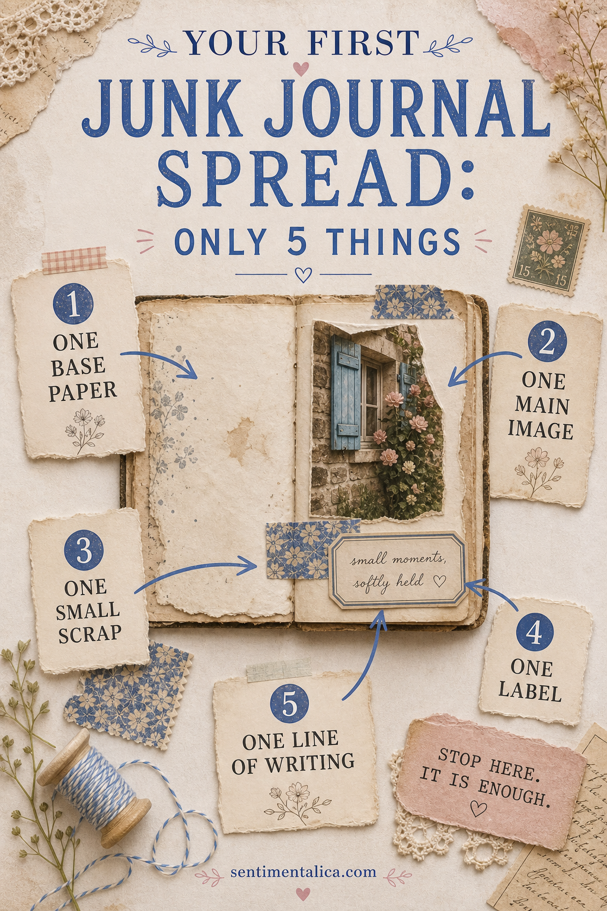
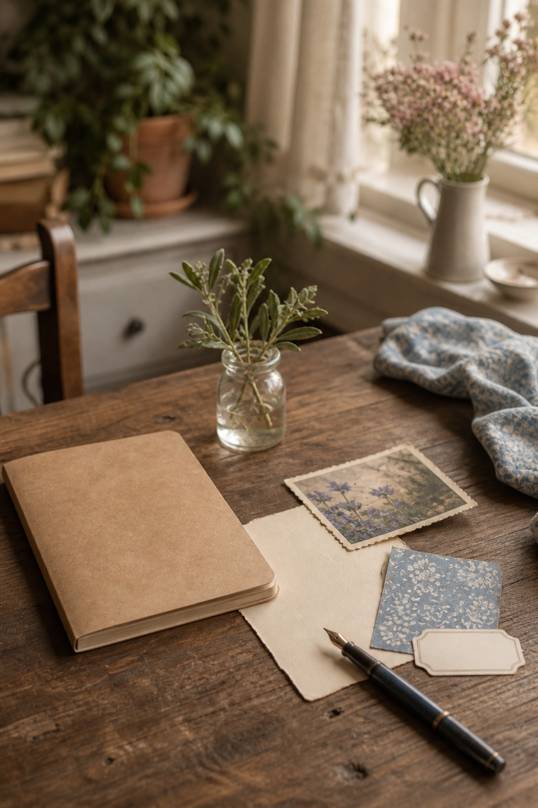

The hardest part of a first junk journal page is rarely glue or paper. It is the feeling that you should already know how to combine everything. You do not. Start with five things and give yourself permission to stop.
This small formula creates a complete spread without requiring special tools, a huge paper collection, or a complicated layout.

1. One base paper
Choose a piece that covers about half of one page: book paper, a paper bag, wrapping paper, or something lightly patterned. Tear one edge and keep the other edge straight. Glue it away from the center fold so the journal can still open comfortably.
2. One main image
Pick the thing you want the eye to find first. It might be a photograph, botanical illustration, postcard, or picture cut from packaging. Place it partly over the base paper. That overlap is enough to make the two pieces feel connected.
3. One small scrap
Add a scrap no bigger than two fingers: patterned paper, lace, a ticket edge, or a strip of fabric. Put it near the main image, not on the opposite side of the spread. Close placement makes the group feel intentional.

4. One label
A blank label gives the page a resting point. Tuck one edge beneath the image or place it just below the small scrap. You can write the date, a place, a name, or leave it empty until the page tells you what it needs.
5. One line of writing
Write one honest sentence. Try “I wanted to remember…” or “Today felt like…” If the page is not about a particular day, describe why you chose the image. Your handwriting is not an interruption; it is the part that makes the spread yours.
Then stop and look
Before adding anything else, step away for a minute. If your eye can find the main image and there is still some open paper around it, the spread is finished. You may add thread, stamping, or another layer later, but you do not need them to earn the right to call it journaling.
Use ordinary materials first
You can make this spread with things already in the house. A grocery bag becomes base paper, a tea box supplies a small patterned scrap, and an envelope gives you a label. A photograph is optional; a picture from a seed catalogue or an old greeting card works just as well. Starting with familiar materials makes cutting them feel less precious.
If the layout feels awkward
Move pieces closer together before adding more. Beginner pages often feel disconnected because every item has its own island. Let the main image overlap the base, slide the scrap beneath one corner, and place the label close enough to touch the group. Those three overlaps create unity.
If the spread still feels uneven, add writing to the emptier side instead of another decoration. Two or three short lines can visually balance a picture while preserving useful space.
Make the next page easier
Before putting supplies away, choose five pieces for another spread and tuck them into an envelope. You do not have to use them immediately. The next time you sit down, the first decisions are already made, which is often all you need to begin.
Your first spread is not a test. It is simply the first page that teaches your hands what they enjoy.
Image note: Some visuals in this article were created with AI and curated by Sentimentalica.